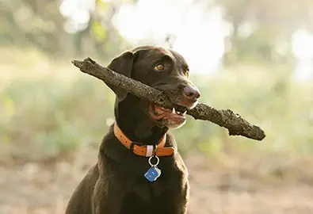
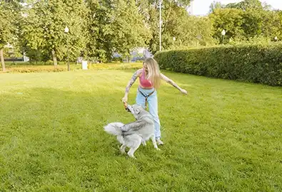
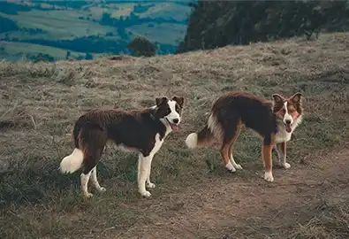
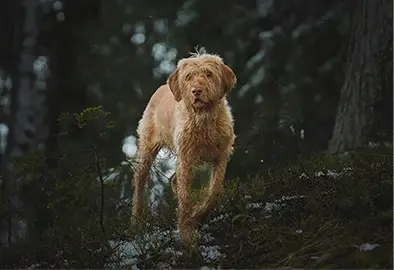
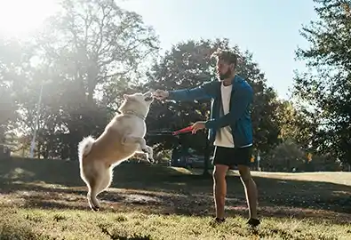
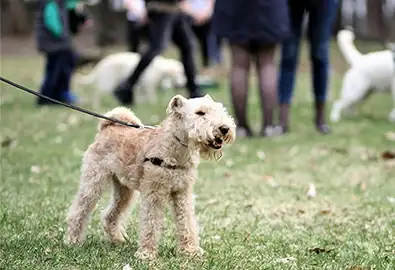

Private Play Fields
These are our top picks if you are looking for a safe and secure environment for your furry friends

Woofland Dog Park
Claremorris, Mayo & Portlaoise, Laois
- €15 for 45 minutes
- Pre-book online
- 1.75 acre field
- Fully fenced

Tail Blazers
Newrath, Waterford
- €10 - €15 for 50 minutes
- Pre-book online
- 4 separate fields
- Fully fenced
Pawsome Walks
Drishoge, Dublin
- €15 for 50 minutes
- Pre-book online
- 2 acre field
- Fully fenced
Coillte Tail Trails
The perfect locations for a scenic walk with your furry friends along a trail or exploring a forest

Glenbarrow EcoWalk
Clonaslee, Laois
- Free
- Off lead areas
- 8.9km loop
- Moderately challenging

Ravensdale Forest
Ravensdale, Louth
- Free
- Off lead areas
- 8.5km loop
- Moderately challenging
Fully Fenced Parks
Public spaces to play and meet other furry friends who also love zoomies and tennis balls

Mullingar Dog Park
Mullingar, Westmeath
- Free
- Off lead area
- Water station
- Public space

Beechgrove Park
Banbridge, Down
- £7 / playgroup
- Call to pre-book
- Water station
- Doggy wash area